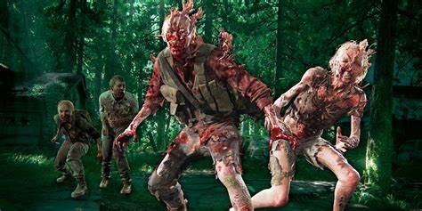
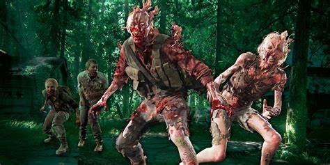

Uma trama que beira a extinção humana Vinte anos após a queda da civilização, Joel é contratado pra tirar Ellie de uma zona de quarentena perigosa. O que começa como um pequeno trabalho, logo se transforma em uma jornada brutal pela sobrevivência.
A série, que traz a história de sobrevivência da humanidade após um apocalipse, vem de um extenso trabalho de Bruce Straley e Neil Druckmann, diretores de criação. Anos depois da liberação dos jogos e suas expansões, a adaptação ao audiovisual não só é muito aguardada pelos fãs, como também uma nova aposta para adaptações de videogames.